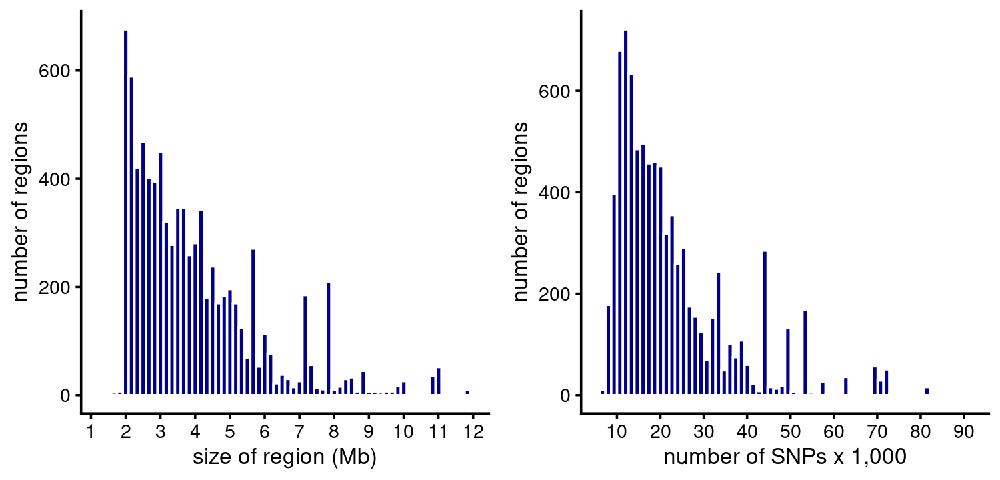
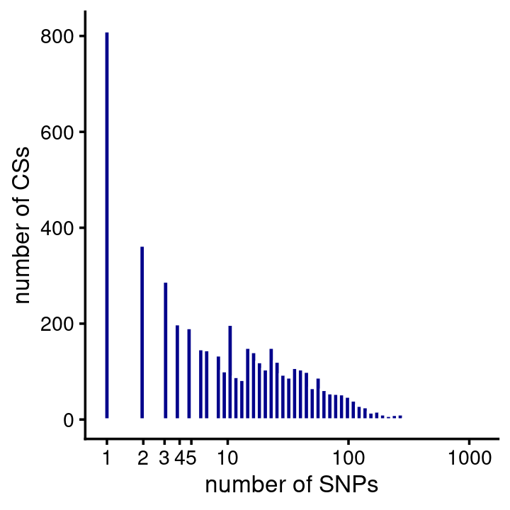

Analysis of some susie and fsusie results on the ROSMAP data
William Denault, Hao Sun, Peter Carbonetto, Gao Wang
Last updated: 2024-04-26
Checks: 7 0
Knit directory:
fsusie-experiments/analysis/
This reproducible R Markdown analysis was created with workflowr (version 1.7.1.1). The Checks tab describes the reproducibility checks that were applied when the results were created. The Past versions tab lists the development history.
Great! Since the R Markdown file has been committed to the Git repository, you know the exact version of the code that produced these results.
Great job! The global environment was empty. Objects defined in the global environment can affect the analysis in your R Markdown file in unknown ways. For reproduciblity it’s best to always run the code in an empty environment.
The command set.seed(1) was run prior to running the
code in the R Markdown file. Setting a seed ensures that any results
that rely on randomness, e.g. subsampling or permutations, are
reproducible.
Great job! Recording the operating system, R version, and package versions is critical for reproducibility.
Nice! There were no cached chunks for this analysis, so you can be confident that you successfully produced the results during this run.
Great job! Using relative paths to the files within your workflowr project makes it easier to run your code on other machines.
Great! You are using Git for version control. Tracking code development and connecting the code version to the results is critical for reproducibility.
The results in this page were generated with repository version b316ab6. See the Past versions tab to see a history of the changes made to the R Markdown and HTML files.
Note that you need to be careful to ensure that all relevant files for
the analysis have been committed to Git prior to generating the results
(you can use wflow_publish or
wflow_git_commit). workflowr only checks the R Markdown
file, but you know if there are other scripts or data files that it
depends on. Below is the status of the Git repository when the results
were generated:
working directory clean
Note that any generated files, e.g. HTML, png, CSS, etc., are not included in this status report because it is ok for generated content to have uncommitted changes.
These are the previous versions of the repository in which changes were
made to the R Markdown (analysis/rosmap.Rmd) and HTML
(docs/rosmap.html) files. If you’ve configured a remote Git
repository (see ?wflow_git_remote), click on the hyperlinks
in the table below to view the files as they were in that past version.
| File | Version | Author | Date | Message |
|---|---|---|---|---|
| Rmd | b316ab6 | Peter Carbonetto | 2024-04-26 | workflowr::wflow_publish("rosmap.Rmd", verbose = TRUE, view = FALSE) |
| Rmd | cc246fe | Peter Carbonetto | 2024-04-26 | workflowr::wflow_publish("rosmap.Rmd", verbose = TRUE) |
| Rmd | 95e4aba | Peter Carbonetto | 2024-04-26 | Fixed the distance-to-TSS plot in the rosmap analysis. |
| Rmd | 366e27c | Peter Carbonetto | 2024-04-26 | Added a couple todos to rosmap.Rmd. |
| Rmd | e691fcd | Peter Carbonetto | 2024-04-26 | Added distance-to-TSS plot in the rosmap analysis. |
| Rmd | 4fb83bd | Peter Carbonetto | 2024-04-25 | Added step to rosmap.Rmd to get TSS for each ‘region’ in susie results. |
| Rmd | f8799a1 | Peter Carbonetto | 2024-04-25 | Added plot to rosmap.Rmd for CS sizes. |
| Rmd | 4ac6873 | Peter Carbonetto | 2024-04-25 | Added a couple simple plots to the rosmap analysis. |
| Rmd | 5ba241b | Peter Carbonetto | 2024-04-25 | Wrote function get_gene_annotations used in the rosmap analysis. |
| Rmd | b1b38f0 | Peter Carbonetto | 2024-04-25 | Added steps to rosmap analysis to prepare the gene annotations into a convenient data frame. |
| html | 142928b | Peter Carbonetto | 2024-04-25 | First build of rosmap analysis; added gene annotation files. |
| Rmd | a4e3d76 | Peter Carbonetto | 2024-04-25 | workflowr::wflow_publish("analysis/rosmap.Rmd", verbose = TRUE) |
To build the workflowr page, I run this:
sinteractive -c 4 --mem=24G --time=20:00:00 -p mstephens
module load R/4.1.0-no-openblas
module load pandoc/3.0.1
R
> .libPaths()[1]
# [1] "/home/pcarbo/R_libs_4_10_no_openblas"
> workflowr::wflow_build("rosmap.Rmd",view = FALSE,verbose = TRUE)TO DO: GIVE OVERVIEW HERE.
Load the packages as well as some additional custom functions used in the analysis below,
library(data.table)
library(ggplot2)
library(cowplot)
source("../code/rosmap_functions.R")
setDTthreads(1)Load the susie fine-mapping results on the “Inh_mega_eQTL” RNA-seq data.
datadir <- file.path("/project2/mstephens/fungen_xqtl/ftp_fgc_xqtl",
"analysis_result/finemapping_twas/prepared_results")
load(file.path(datadir,"susie_Inh_mega_eQTL.RData"))
susie <- list(regions = regions,cs = cs,pips = pips)
rm(regions,cs,pips)Load the fsusie fine-mapping results on the DLPFC methylation data.
load(file.path(datadir,"fsusie_ROSMAP_DLPFC_mQTL.RData"))
fsusie <- list(regions = regions,cs = cs,pips = pips)
rm(regions,cs,pips)Load the gene annotations. Specifically I extract here only the annotated gene transcripts for protein-coding genes as defined in the Ensembl/Havana database.
gene_file <-
file.path("../data/genome_annotations",
"Homo_sapiens.GRCh38.103.chr.reformatted.collapse_only.gene.gtf.gz")
genes <- get_gene_annotations(gene_file)SuSiE fine-mapping of RNA-seq
Size of regions in base-pairs and SNPs:
susie$regions$pos_min <- sapply(susie$pips,function (x) min(x$pos))
susie$regions$pos_max <- sapply(susie$pips,function (x) max(x$pos))
susie$regions <- transform(susie$regions,size_bp = pos_max - pos_min)
p1 <- ggplot(susie$regions,aes(size_bp/1e6)) +
geom_histogram(color = "white",fill = "darkblue",bins = 64) +
scale_x_continuous(breaks = seq(0,50,5)) +
labs(x = "size of region (Mb)",
y = "number of regions") +
theme_cowplot(font_size = 10)
p2 <- ggplot(susie$regions,aes(num_snps)) +
geom_histogram(color = "white",fill = "darkblue",bins = 64) +
scale_x_continuous(breaks = seq(0,1e5,1e4)) +
labs(x = "number of SNPs",
y = "number of regions") +
theme_cowplot(font_size = 10)
plot_grid(p1,p2)
Number of CSs per region:
table(CSs = susie$regions$num_cs)
# CSs
# 0 1 2 3 4 5 6 7 8 12
# 4283 1333 294 68 28 5 1 1 3 1CS sizes:
n <- nlevels(susie$cs$region)
cs_sizes <- vector("list",n)
region_names <- levels(susie$cs$region)
names(cs_sizes) <- region_names
for (i in region_names)
cs_sizes[[i]] <- as.vector(table(factor(subset(susie$cs,region == i)$cs)))
cs_sizes <- unlist(cs_sizes)
pdat <- data.frame(cs_size = cs_sizes)
ggplot(pdat,aes(cs_size)) +
geom_histogram(color = "white",fill = "darkblue",bins = 64) +
scale_x_continuous(trans = "log10",breaks = c(1:5,10,100,1000)) +
labs(x = "number of SNPs",
y = "number of CSs") +
theme_cowplot(font_size = 10)
NEXT: Create a plot showing the distance between the susie SNP and the gene’s TSS. First get the TSS for each gene/region. Note: this code is based on function “gtf_to_tss_bed” here.
region_names <- susie$regions$region_name
rownames(susie$regions) <- region_names
susie$regions$tss <- as.numeric(NA)
susie$regions$strand <- as.character(NA)
for (i in region_names) {
j <- which(genes$ensembl == i)
if (length(j) == 1) {
susie$regions[i,"strand"] <- as.character(genes[j,"strand"])
if (genes[j,"strand"] == "+")
susie$regions[i,"tss"] <- genes[j,"start"]
else
susie$regions[i,"tss"] <- genes[j,"end"]
}
}
susie$regions <- transform(susie$regions,strand = factor(strand))Now compute the distance to the TSS weighted by the PIPs:
n <- length(susie$pips)
bins <- c(-Inf,seq(-1e6,1e6,5e4),Inf)
counts <- rep(0,length(bins) - 1)
for (i in 1:n) {
if (!is.na(susie$regions[i,"tss"])) {
pips <- susie$pips[[i]]
dist_to_tss <- susie$regions[i,"tss"] - pips$pos
if (susie$regions[i,"strand"] == "-")
dist_to_tss <- -dist_to_tss
dist_to_tss <- cut(dist_to_tss,bins)
res <- tapply(pips$pip,dist_to_tss,sum)
res[is.na(res)] <- 0
counts <- counts + res
}
}Plot the result:
n <- length(counts)
bins <- bins[seq(2,n-1)]
counts <- counts[seq(2,n-1)]
pdat <- data.frame(pos = bins + 2.5e4,count = counts)
ggplot(pdat,aes(x = pos,y = count)) +
geom_point(color = "darkblue") +
geom_line(color = "darkblue") +
scale_y_continuous(limits = c(0,2000)) +
labs(x = "distance from TSS",y = "SNPs weighted by PIPs") +
theme_cowplot(font_size = 10)
TO DO NEXT:
Load fsusie haQTL results.
sessionInfo()
# R version 4.1.0 (2021-05-18)
# Platform: x86_64-pc-linux-gnu (64-bit)
# Running under: CentOS Linux 7 (Core)
#
# Matrix products: default
# BLAS: /software/R-4.1.0-no-openblas-el7-x86_64/lib64/R/lib/libRblas.so
# LAPACK: /software/R-4.1.0-no-openblas-el7-x86_64/lib64/R/lib/libRlapack.so
#
# locale:
# [1] LC_CTYPE=en_US.UTF-8 LC_NUMERIC=C
# [3] LC_TIME=en_US.UTF-8 LC_COLLATE=en_US.UTF-8
# [5] LC_MONETARY=en_US.UTF-8 LC_MESSAGES=en_US.UTF-8
# [7] LC_PAPER=en_US.UTF-8 LC_NAME=C
# [9] LC_ADDRESS=C LC_TELEPHONE=C
# [11] LC_MEASUREMENT=en_US.UTF-8 LC_IDENTIFICATION=C
#
# attached base packages:
# [1] stats graphics grDevices utils datasets methods base
#
# other attached packages:
# [1] cowplot_1.1.1 ggplot2_3.3.5 data.table_1.14.0
#
# loaded via a namespace (and not attached):
# [1] tidyselect_1.1.1 xfun_0.24 bslib_0.4.2 purrr_0.3.4
# [5] colorspace_2.0-2 vctrs_0.3.8 generics_0.1.0 htmltools_0.5.5
# [9] yaml_2.2.1 utf8_1.2.1 rlang_1.1.1 R.oo_1.24.0
# [13] jquerylib_0.1.4 later_1.2.0 pillar_1.6.1 glue_1.4.2
# [17] withr_2.5.0 DBI_1.1.1 R.utils_2.10.1 lifecycle_1.0.3
# [21] stringr_1.4.0 munsell_0.5.0 gtable_0.3.0 workflowr_1.7.1.1
# [25] R.methodsS3_1.8.1 evaluate_0.14 labeling_0.4.2 knitr_1.33
# [29] fastmap_1.1.0 httpuv_1.6.1 fansi_0.5.0 highr_0.9
# [33] Rcpp_1.0.6 promises_1.2.0.1 scales_1.1.1 cachem_1.0.5
# [37] jsonlite_1.7.2 farver_2.1.0 fs_1.5.0 digest_0.6.27
# [41] stringi_1.6.2 dplyr_1.0.7 rprojroot_2.0.2 grid_4.1.0
# [45] cli_3.6.1 tools_4.1.0 magrittr_2.0.1 sass_0.4.0
# [49] tibble_3.1.2 crayon_1.4.1 whisker_0.4 pkgconfig_2.0.3
# [53] ellipsis_0.3.2 assertthat_0.2.1 rmarkdown_2.9 R6_2.5.0
# [57] git2r_0.28.0 compiler_4.1.0